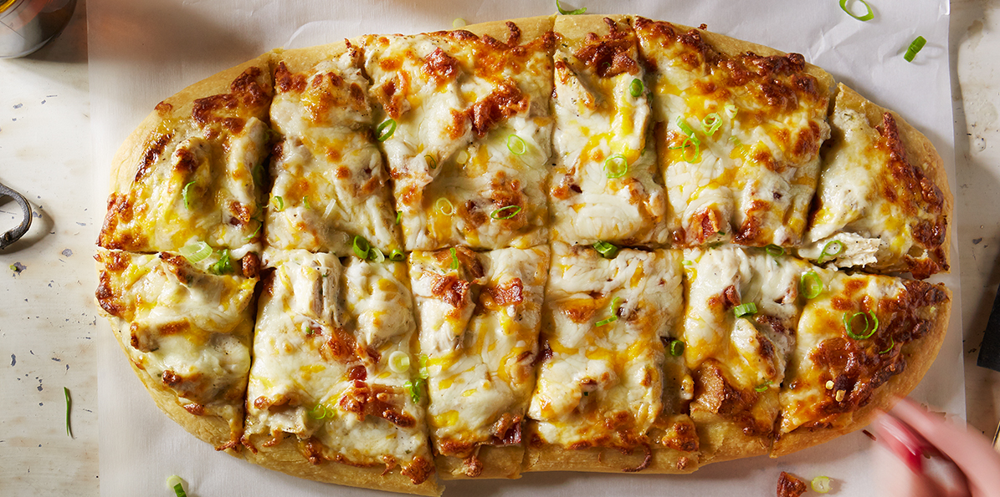

Previous page - Mouth watering chicken ranch pizza

It’s nice to keep prepared pizza crusts in the freezer for nights that you want a quick and delicious yet
homemade-tasting pizza.
And it’s fun to get creative with the toppings. This one with chicken, bacon and ranched
dressing is smothered in cheese.
Recipe guide :
Cooking time: 14 min
Prep time: 15min
Ingredients
- 2 cups cooked chicken, torn or cut into bite-sized pieces
- 2/3 cup ranch dressing, divided
- 1 (12-inch) prepared pizza crust
- 6 slices bacon, cooked crisp, crumbled
- 1/4 cup sliced green onion (optional)
- 3 cups Reserve Series™ Aged Italian Blend Cheese
Steps
-
Combine chicken and 1/3 cup dressing in medium bowl; mix well.
Spread remaining 1/3 cup dressing over pizza
crust. Spoon chicken mixture over crust; top with bacon, onion and cheese.
Tip: If desired, add some diced
tomatoes.
-
Place on baking sheet; bake in preheated 400°F oven 14 minutes or until crust is browned and cheese is melted.
Cut into wedges and serve.